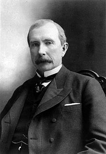

John D. Rockefeller:

Rockefeller was the second of six children and eldest son born in Richford, New York, to con artist William Avery "Bill" Rockefeller (November 13, 1810 – May 11, 1906) and Eliza Davison (September 12, 1813 – March 28, 1889). His siblings were Lucy (1838–1878), William Jr. (1841–1922), Mary (1843–1925), and twins Franklin (Frank) (1845–1917) and Frances (1845–1847). His father was of English and German descent while his mother was of Scots-Irish descent. Bill was first a lumberman and then a traveling salesman who identified himself as a "botanic physician" and sold elixirs. The locals referred to the mysterious but fun-loving man as "Big Bill" and "Devil Bill". He was a sworn foe of conventional morality who had opted for a vagabond existence and who returned to his family infrequently. Throughout his life, Bill was notorious for shady schemes. In between the births of Lucy and John, Bill and his mistress/housekeeper Nancy Brown had a daughter named Clorinda who died young. Between John and William Jr.'s births, Bill and Nancy had another daughter, Cornelia.Eliza, a homemaker and a devout Baptist, struggled to maintain a semblance of stability at home, as Bill was frequently gone for extended periods. She also put up with his philandering and his double life, which included bigamy. Thrifty by nature and necessity, she taught her son that "willful waste makes woeful want". John did his share of the regular household chores and earned extra money raising turkeys, selling potatoes and candy, and eventually lending small sums of money to neighbors. He followed his father's advice to "trade dishes for platters" and always get the better part of any deal. Bill once bragged, "I cheat my boys every chance I get. I want to make 'em sharp."
| “ | From the beginning, I was trained to work, to save, and to give." | ” |
| — John D. Rockefeller, | ||
When he was a boy, his family moved to Moravia, New York, and in 1851 to Owego, New York, where he attended Owego Academy. In 1853, his family moved to Strongsville, Ohio and he attended Cleveland's Central High School, the first high school in Cleveland and the first free, public high school west of the Alleghenies. Then, he took a ten-week business course at Folsom's Commercial College, where he studied bookkeeping.Despite his father's absences and frequent family moves, young John was a well-behaved, serious, and studious boy. His contemporaries described him as reserved, earnest, religious, methodical, and discreet. He was an excellent debater and expressed himself precisely. He also had a deep love of music and dreamed of it as a possible career.
In September 1855, when Rockefeller was sixteen, he got his first job as an assistant bookkeeper working for a small produce commission firm called Hewitt & Tuttle. He worked long hours and delighted, as he later recalled, in "all the methods and systems of the office. He was particularly adept at calculating transportation costs, which served him well later in his career. Making 50 cents a day, the full salary for his first three months' work was $50 (equivalent to $1 thousand in 2015 dollars).
As a youth, Rockefeller reportedly said that his two great ambitions were to make $100 thousand (equivalent to $3 million in 2015 dollars) and to live 100 years.
In 1859, Rockefeller went into the produce commission business with a partner, Maurice B. Clark, and they raised $4,000 (equivalent to $100 thousand in 2015 dollars) in capital. Rockefeller went steadily ahead in business from there, making money each year of his career.
While his brother Frank fought in the Civil War, Rockefeller tended his business and hired substitute soldiers. He gave money to the Union cause, as did many rich Northerners who avoided combat. Rockefeller was an abolitionist who voted for President Abraham Lincoln and supported the then-new Republican Party.As he said, "God gave me money", and he did not apologize for it. He felt at ease and righteous following Methodist preacher John Wesley's dictum, "gain all you can, save all you can, and give all you can."
At that time, the Federal government was subsidizing oil prices, driving the price up from $.35 a barrel in 1862 to as high as $13.75. This created an oil-drilling glut, with thousands of speculators attempting to make their fortunes. Most failed, but those who struck oil did not even need to be efficient. They would blow holes in the ground and gather up the oil as they could, often leading to creeks and rivers flowing with wasted oil in the place of water.
In this environment of wasteful boom, the partners switched from foodstuffs to oil, building an oil refinery in 1863 in "The Flats", then Cleveland's burgeoning industrial area. The refinery was directly owned by Andrews, Clark & Company, which was composed of Clark & Rockefeller, chemist Samuel Andrews, and M. B. Clark's two brothers. The commercial oil business was then in its infancy. Whale oil had become too expensive for the masses, and a cheaper, general-purpose lighting fuel was needed.
While other refineries would keep the 60% of oil product that became kerosene, but dump the other 40% in rivers and massive sludge piles, Rockefeller remained as thrifty and efficient as ever, using the gasoline to fuel the refinery, and selling the rest as lubricating oil, petroleum jelly and paraffin wax, and other by-products. Tar was used for paving, naphtha shipped to gas plants.
Likewise, Rockefeller's refineries hired their own plumbers, cutting the cost of pipe-laying in half. Barrels that cost $2.50 each ended up only $.96 when Rockefeller bought the wood and had them built for himself.
In February 1865, in what was later described by oil industry historian Daniel Yergin as a "critical" action, Rockefeller bought out the Clark brothers for $72,500 (equivalent to $1 million in 2015 dollars) at auction and established the firm of Rockefeller & Andrews. Rockefeller said, "It was the day that determined my career." He was well positioned to take advantage of postwar prosperity and the great expansion westward fostered by the growth of railroads and an oil-fueled economy. He borrowed heavily, reinvested profits, adapted rapidly to changing markets, and fielded observers to track the quickly expanding industry.
In 1866, William Rockefeller Jr., John's brother, built another refinery in Cleveland and brought John into the partnership. In 1867, Henry M. Flagler became a partner, and the firm of Rockefeller, Andrews & Flagler was established. By 1868, with Rockefeller continuing practices of borrowing and reinvesting profits, controlling costs, and using refineries' waste, the company owned two Cleveland refineries and a marketing subsidiary in New York; it was the largest oil refinery in the world.[39][40] Rockefeller, Andrews & Flagler was the predecessor of the Standard Oil Company.